南大门复刻“交院人精神”雕塑
原“交专人精神”雕塑于1996年10月18日落成于无影山校区南门，凝练“爱校、敬业、务实、创新”的内核，是学校的兴校之基、强校之魂。
如今，雕塑复刻落户长清校区南大门。后勤配合完成基座施工、周边绿地修整管护，将这份贯穿校史的精神安放在校园入口，迎接每一位师生与返校校友。
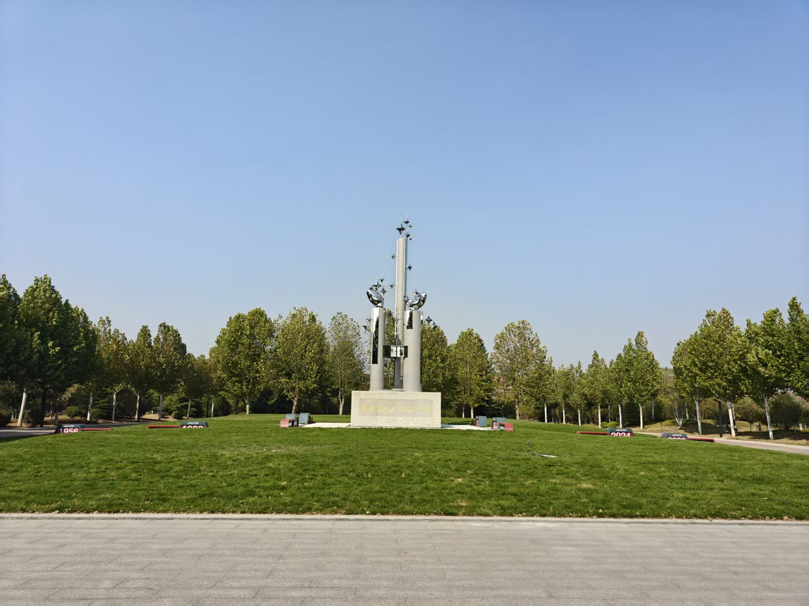
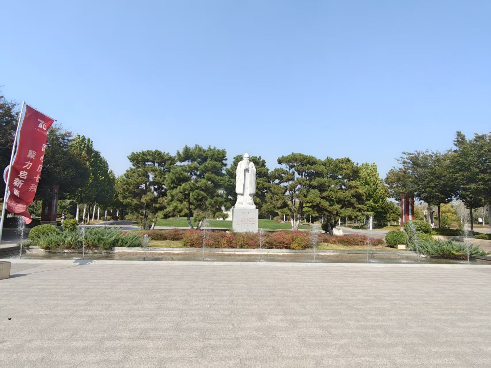
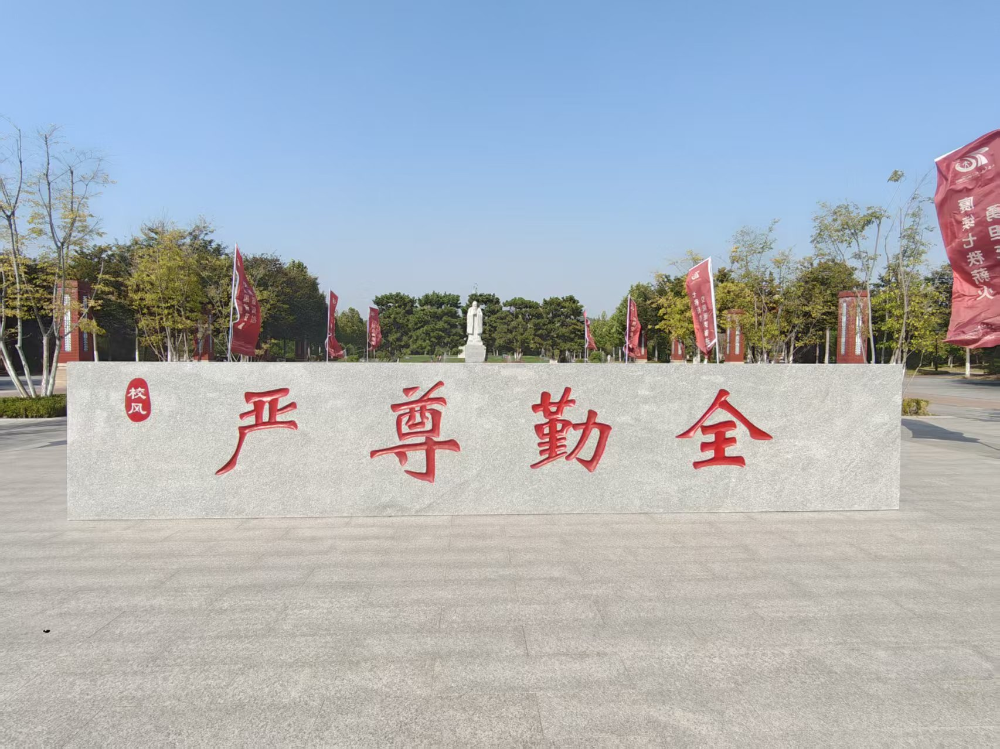
校友广场南侧锚形立标建筑
校友广场南侧新建锚形立标建筑。锚象征扎根坚守、行稳致远，契合交院交通办学底色。
后勤完成场地平整、步道修缮与配套绿化养护，与校友广场原有景致相融，打造一处承载交通情怀的文化打卡点。
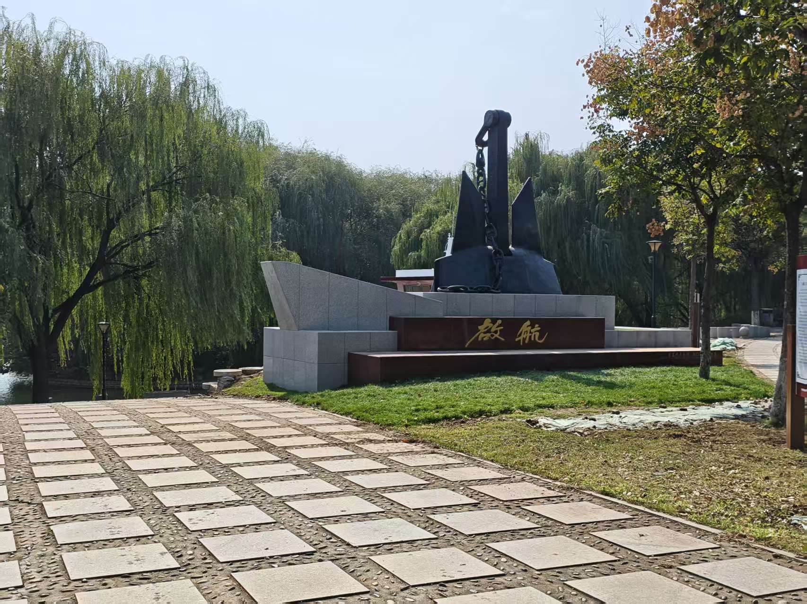
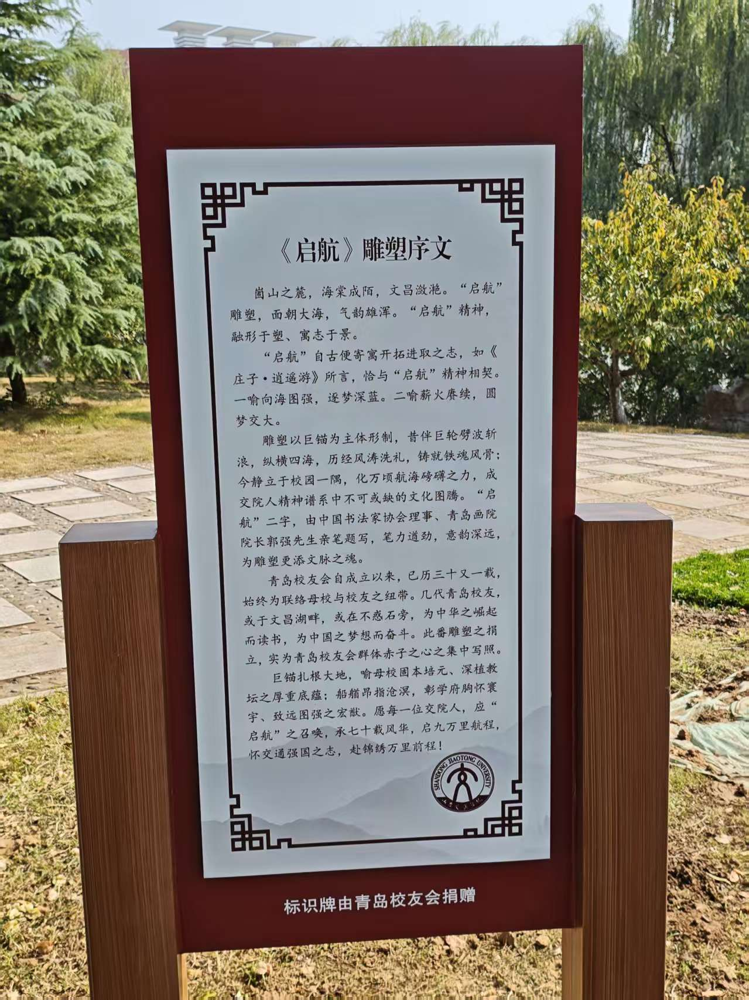
油麦田“交”字造型小路
油麦田内建成“交”字造型小路。步道取“交通”之意，镶嵌于田园之间，自然风貌与校园文化相融。后勤完成步道铺设、土地平整与田间植被管护，成为师生课余漫步休憩的新去处。
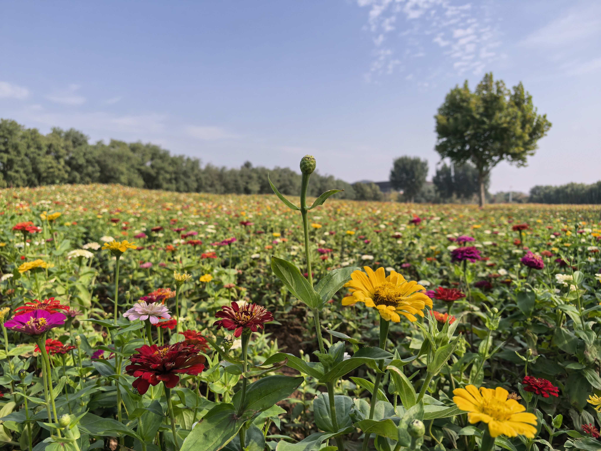
校园一隅，留住熟悉风景
校园景观记录着交院人的共同记忆。人物雕塑、书本造型、校训石刻与广场绿地彼此映衬，构成校园中熟悉而有温度的一隅。
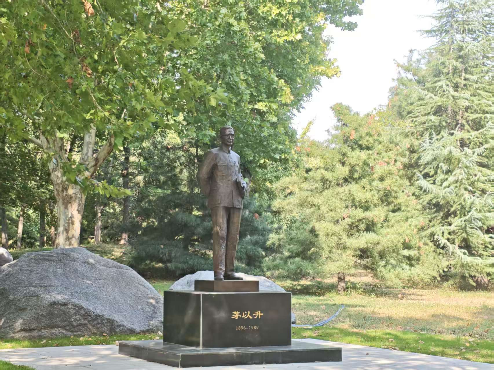
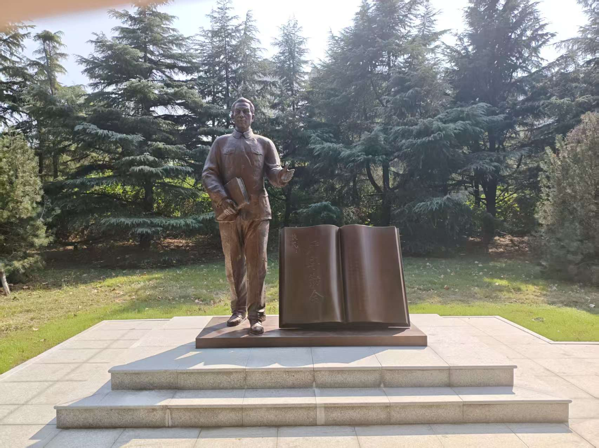
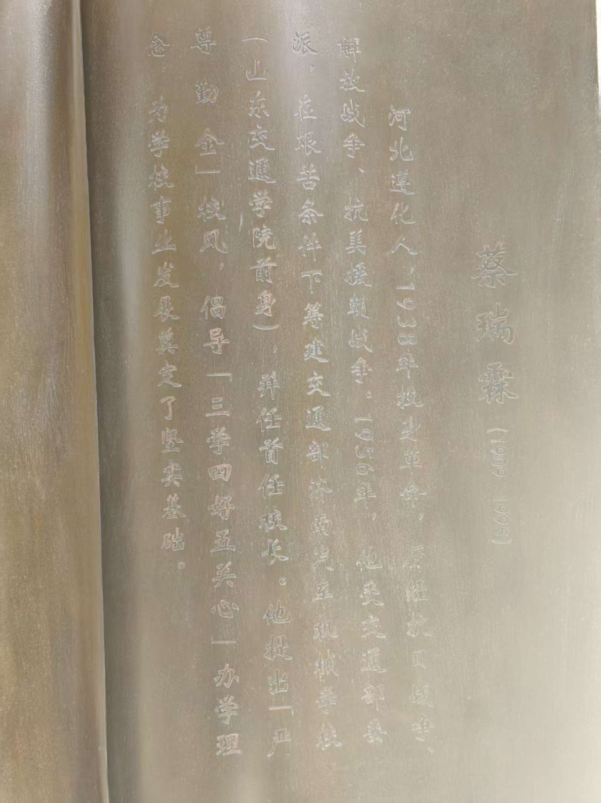
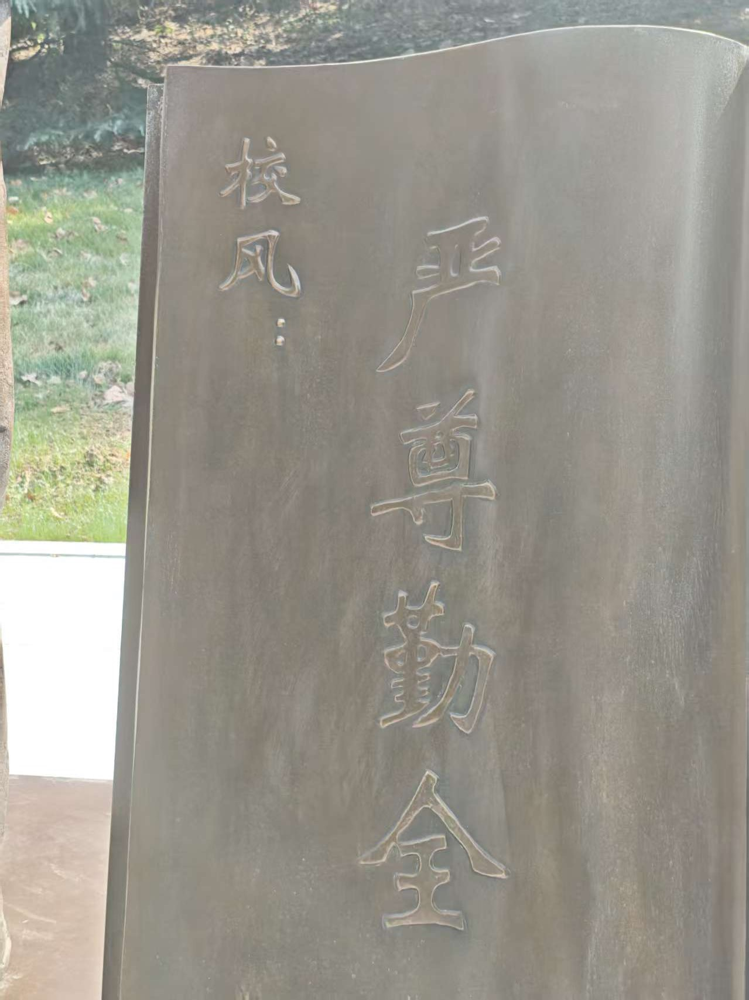
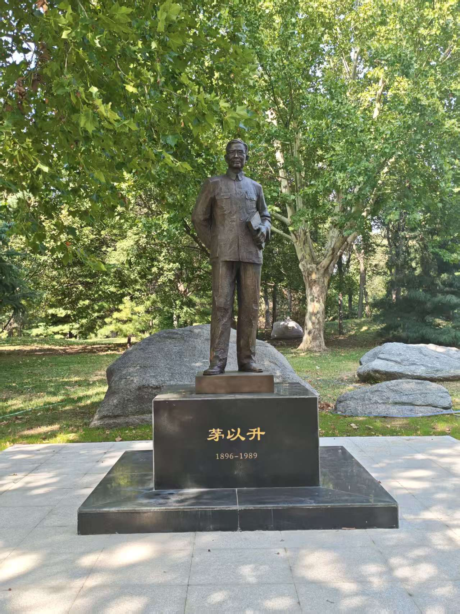